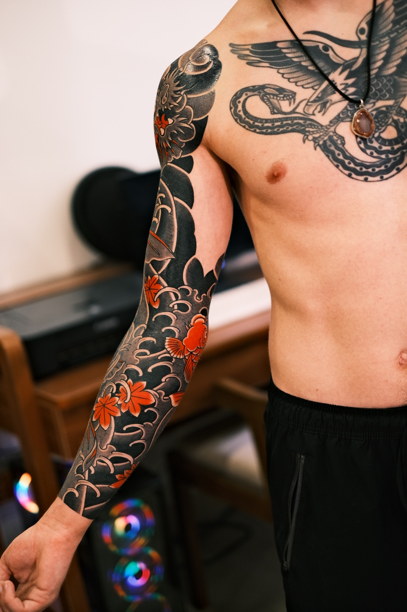

Consultation
Theme, body placement, scale and long-term direction.
 PROJECT ARCHIVE
PROJECT ARCHIVE

Câu chuyện dự án
The dragon governs the upper arm while the koi rises through water, wind bars and maple leaves. The composition was developed around the movement of the body rather than treated as a flat image.
Ý tưởng

The main figures are separated through scale and direction. Dense black fields anchor the sleeve; open skin gives the dragon, koi and seasonal elements enough room to remain readable from a distance.
The background is not decoration. Water and wind connect every section and keep the piece continuous as the arm rotates.
Tiến trình
Theme, body placement, scale and long-term direction.
Drawing the major forms around shoulder, elbow and wrist.
Establishing the full movement before dense fields are added.
Building contrast, depth and visual hierarchy over multiple sessions.
Balancing transitions and photographing the final composition.
Chuyển động
V8.3 supports local MP4 video. Replace the demo file in videos/dragon-koi-sleeve-process.mp4 with your real clip and the page updates automatically.
Thành phẩm


Nghệ sĩ
Working in wabori and tebori-informed Japanese tattooing, with a focus on body-led composition, patience and long-term readability.
View artist profile ↗Dự án tiếp theo